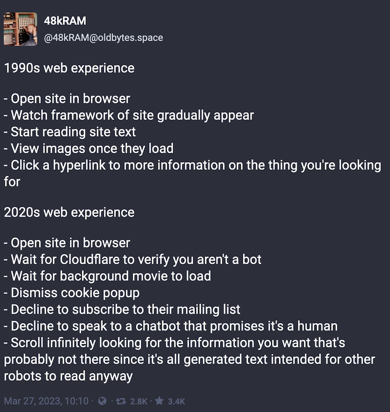
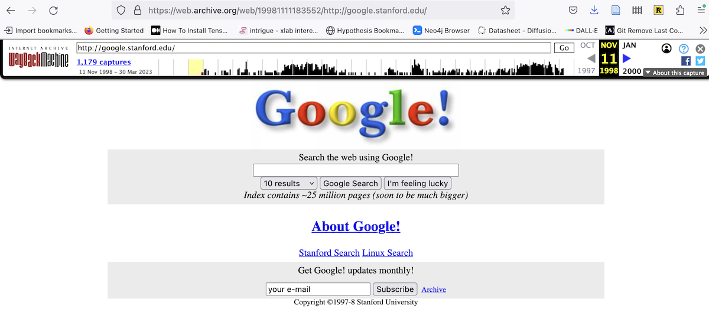
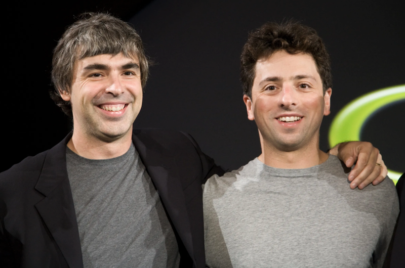
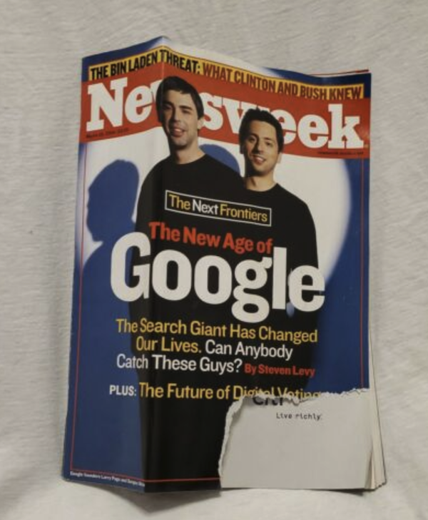
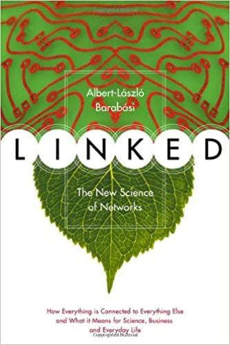
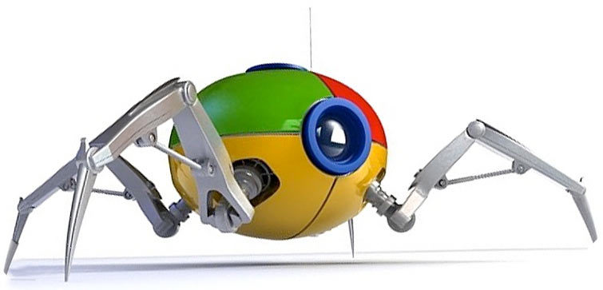
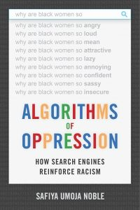
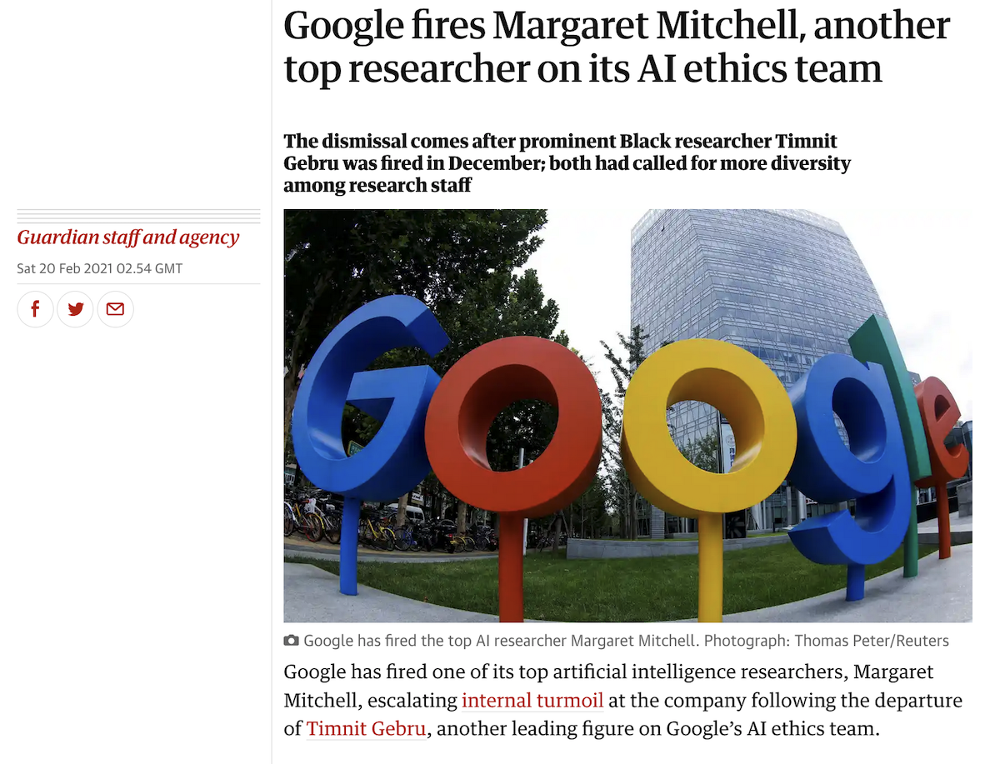
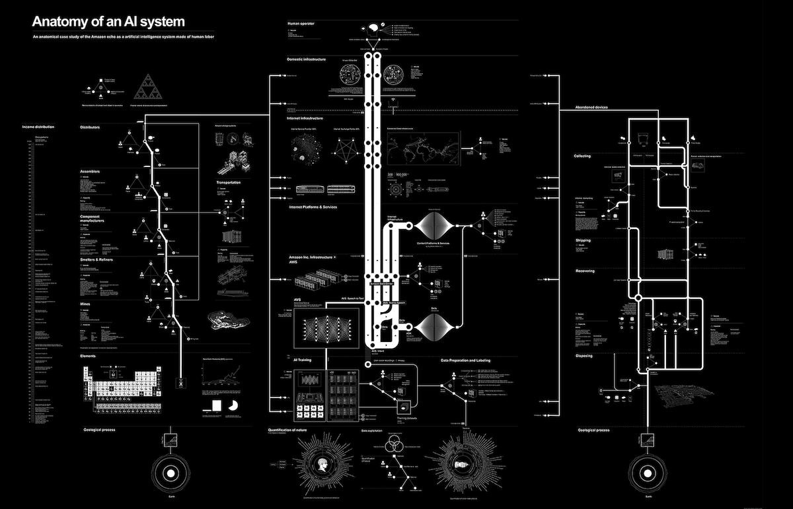
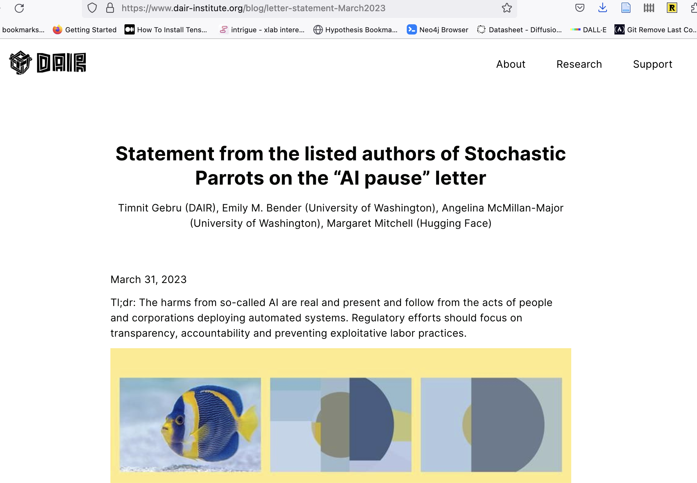

<!DOCTYPE html>
<html lang="en">
  <head>
    <meta charset="utf-8" />
    <meta name="viewport" content="width=device-width, initial-scale=1.0, maximum-scale=1.0, user-scalable=no" />

    <title></title>
    <link rel="stylesheet" href="dist/reveal.css" />
    <link rel="stylesheet" href="dist/theme/simple.css" id="theme" />
    <link rel="stylesheet" href="plugin/highlight/zenburn.css" />
	<link rel="stylesheet" href="css/layout.css" />
	<link rel="stylesheet" href="plugin/customcontrols/style.css">


    <script defer src="dist/fontawesome/all.min.js"></script>

	<script type="text/javascript">
		var forgetPop = true;
		function onPopState(event) {
			if(forgetPop){
				forgetPop = false;
			} else {
				parent.postMessage(event.target.location.href, "app://obsidian.md");
			}
        }
		window.onpopstate = onPopState;
		window.onmessage = event => {
			if(event.data == "reload"){
				window.document.location.reload();
			}
			forgetPop = true;
		}

		function fitElements(){
			const itemsToFit = document.getElementsByClassName('fitText');
			for (const item in itemsToFit) {
				if (Object.hasOwnProperty.call(itemsToFit, item)) {
					var element = itemsToFit[item];
					fitElement(element,1, 1000);
					element.classList.remove('fitText');
				}
			}
		}

		function fitElement(element, start, end){

			let size = (end + start) / 2;
			element.style.fontSize = `${size}px`;

			if(Math.abs(start - end) < 1){
				while(element.scrollHeight > element.offsetHeight){
					size--;
					element.style.fontSize = `${size}px`;
				}
				return;
			}

			if(element.scrollHeight > element.offsetHeight){
				fitElement(element, start, size);
			} else {
				fitElement(element, size, end);
			}		
		}


		document.onreadystatechange = () => {
			fitElements();
			if (document.readyState === 'complete') {
				if (window.location.href.indexOf("?export") != -1){
					parent.postMessage(event.target.location.href, "app://obsidian.md");
				}
				if (window.location.href.indexOf("print-pdf") != -1){
					let stateCheck = setInterval(() => {
						clearInterval(stateCheck);
						window.print();
					}, 250);
				}
			}
	};


        </script>
  </head>
  <body>
    <div class="reveal">
      <div class="slides"><section  data-markdown><script type="text/template"><!-- .slide: class="drop" data-background-opacity="0.5" data-background-image="early-google.png" -->
<div class="" style="position: absolute; left: 0px; top: 0px; height: 700px; width: 960px; min-height: 700px; display: flex; flex-direction: column; align-items: center; justify-content: center" absolute="true">

# Don't Be Evil
</div></script></section><section  data-markdown><script type="text/template"><!-- .slide: class="drop" -->
<div class="" style="position: absolute; left: 0px; top: 0px; height: 700px; width: 960px; min-height: 700px; display: flex; flex-direction: column; align-items: center; justify-content: center" absolute="true">


</div></script></section><section  data-markdown><script type="text/template"><!-- .slide: class="drop" -->
<div class="" style="position: absolute; left: 0px; top: 0px; height: 700px; width: 960px; min-height: 700px; display: flex; flex-direction: column; align-items: center; justify-content: center" absolute="true">

https://oldbytes.space/@48kRAM/110095643846210882


</div></script></section><section  data-markdown><script type="text/template"><!-- .slide: class="drop" -->
<div class="" style="position: absolute; left: 0px; top: 0px; height: 700px; width: 960px; min-height: 700px; display: flex; flex-direction: column; align-items: center; justify-content: center" absolute="true">


</div>

<aside class="notes"><ul>
<li>starts as Larry Page&#39;s dissertation project on mathematics of the web, web as a structured graph in 1996</li>
<li>inspired by the way citations in academic literature point backwards, and give a sense of what&#39;s important;</li>
<li>Brin writes the webcrawler to put Page&#39;s ideas in motion; analyzing the results they came up with pageRank, which they realized would give more useful results than the basic lists currently being used (or which gave highest rank to pages with largest numbers of keywords); cites research, in the eventual publication, by Robin Li, the guy who created Baidu.</li>
</ul>
</aside></script></section><section  data-markdown><script type="text/template"><!-- .slide: class="drop" -->
<div class="" style="position: absolute; left: 0px; top: 0px; height: 700px; width: 960px; min-height: 700px; display: flex; flex-direction: column; align-items: center; justify-content: center" absolute="true">


</div>

<aside class="notes"><ul>
<li>originally against advertising, but quickly changed tune by the time they got their company running - formally incorporated in 1998.</li>
<li>by 1999 indexes 60 million pages; but got some really positive coverage (dot com boom journalism y&#39;all!) . Tried to sell it to Excite.com for <code>$1 million (they got bargained down to $</code>750 000 <em>but excite still said no</em>).</li>
<li>2000 starts selling advertising against results, where price is bid + per-click rate (and who has the data on per click rate, hmm?) - immediate law suit, advertising company called goto.com sues for patent infringement, settled out of court (goto becomes Overture Services becomes bought by yahoo) for a perpetual license in return for stock.</li>
<li>2001 Page screws up enough as CEO that shareholders get Eric Schmidt brought in, famously, as &#39;parental supervision&#39;</li>
<li>2003 Yahoo tries to buy for $3 billion</li>
<li>2004 has its IPO; Yahoo quits the partnership with its own search engine</li>
<li>2005 valued at 52$ billion</li>
<li>by 2008 click fraud a big problem for them, they start using cookies to track people; kept this info separate from its other services until 2016 so now you are personally identifiable by your browsing to google</li>
<li>by the 2010s google buys up other services, or launches similar services, or kills services off; getting in hot water for toxic workplace (sexual misconduct hushed up) or for being involved in seriously dodgy surveillance projects. Several antitrust violations being investigated by 2019 for abuse of monopoly position in search and advertising</li>
</ul>
</aside></script></section><section  data-markdown><script type="text/template"><!-- .slide: class="drop" -->
<div class="" style="position: absolute; left: 0px; top: 0px; height: 700px; width: 960px; min-height: 700px; display: flex; flex-direction: column; align-items: center; justify-content: center" absolute="true">


</div>

<aside class="notes"><p>John Thompson: “mass communication” -&gt; “the institutionalized production and generalized diffusion of symbolic goods via the  transmission and storage of information/communication.&quot; &lt;- 1990. Clear that search engines can fit in this defintion, but that they also don&#39;t, in powerful ways. They don&#39;t produce narratives or stories. So what are they?</p>
<p>eric schmidt: &#39;Google is simply an aggregator of information&#39; &lt;- 2006. Yeah, ok.</p>
<p>they do create the lense through which we view the lens, hence internet. For many folks, they <em>are</em> the internet. &#39;I got it off google&#39; you probably have said. Don&#39;t lie.</p>
<p>search engines do not access the whole web; they do are not consistent; they favour certain kinds of content (especially when using network metrics; they use more than just net statistics these days, so it&#39;s hard to say)</p>
<p>&quot;Political  economy suggests that the development of technology is intimately intertwined with<br>the social, political and economic context in which it arises. In the context of<br>capitalism, the quest for profit both directs technical development in information and<br>is supported by them&quot; - The History of the Internet Search Engine:  Navigational Media and the Traffic Commodity, E. Van Couvering 2008</p>
</aside></script></section><section  data-markdown><script type="text/template"><!-- .slide: class="drop" -->
<div class="" style="position: absolute; left: 0px; top: 0px; height: 700px; width: 960px; min-height: 700px; display: flex; flex-direction: column; align-items: center; justify-content: center" absolute="true">


</div>

<aside class="notes"><p>network science was super hot in the early 2000s and no one knew quite how to do it; this book was very influential</p>
<p>&quot;Albert-Lásló Barabási (2002) recounts how his team of scientists mapped<br>the Web’s structure to reveal disturbing evidence about the supposed “egalitarian-<br>ism” of the network. He found that a small number of pages – what he called<br>“hubs” – are linked to by a great many other pages, while the vast majority of<br>documents are linked to by few or no sites at all. Hubs are very easy to “come<br>across” from anywhere on the Web; they are therefore more likely to be linked to,<br>which further increases their discoverability (the so-called “rich get richer” phe-<br>nomenon). Meanwhile, a typical page – one pointed to by only couple documents<br>– remains almost impossible to find&quot; - see Barabasi, Linked</p>
<p>bits of this section are coming from <a href="http://ndl.ethernet.edu.et/bitstream/123456789/63603/1/82.pdf">http://ndl.ethernet.edu.et/bitstream/123456789/63603/1/82.pdf</a></p>
</aside></script></section><section  data-markdown><script type="text/template"><!-- .slide: class="drop" -->
<div class="" style="position: absolute; left: 0px; top: 0px; height: 700px; width: 960px; min-height: 700px; display: flex; flex-direction: column; align-items: center; justify-content: center" absolute="true">


</div>

<aside class="notes"><p>previous publishing platforms had to deal with scarcity in the sense of &#39;spectrum&#39; - channels over which they could deliver their goods. internet sites on the other hand have to deal with attention scarcity; we used to rely on a handful of radio or tv stations to act as intermediaries between consumer and potential material. Now we rely on search engines. And people are now using things that aren&#39;t search engines in that same way - tiktok. chatgpt. I&#39;m not even going to try to deal with the ramifications of that in this course.</p>
<p>but can you trust google or bing to deliver up what you want to find? that is a key question. how would you know if the results were being goosed by someone paying Google to do so? Kinda like the guy who goes out and invents the automatic telephone exchange because the existing tech was being goosed from the inside</p>
</aside></script></section><section  data-markdown><script type="text/template"><!-- .slide: class="drop" -->
<div class="" style="position: absolute; left: 0px; top: 0px; height: 700px; width: 960px; min-height: 700px; display: flex; flex-direction: column; align-items: center; justify-content: center" absolute="true">


</div>

<aside class="notes"><p>early google depends on webcrawlers to travel the links on a webpage; in those days also used to use other signals to ascertain whether or not a site was valuable, but key was PageRank - the weighted count of links pointing to it, and if some of those links came from high pagerank documents those ones would be counted even higher. ie, a popularity contest. Can also think of it as the probability that a random &#39;surfer&#39; (think about metaphors!!!) would come across a given document. Thus a handful of popular hub websites, and millions of low value sites -&gt; <a href="https://en.wikipedia.org/wiki/List_of_most_visited_websites">https://en.wikipedia.org/wiki/List_of_most_visited_websites</a></p>
<p>early writing about google framed this process as a kind of democracy. making a hyperlink was a kind of vote, thus google = democracy. But in a real democracy, you don&#39;t have the tyranny of the majority. Many argued that pagerank didn&#39;t surface material but rather replicated existing biases. vicious circle:&quot;The problem is this: a well-linked page appears prominently on search engines  like Google; this page therefore enjoys greater traffic; and, as users become even<br>more aware of the site, they link to it on their own pages, increasing the document’s<br>PageRank and visibility even further.&quot;</p>
<ul>
<li>the early anyone-can-have-a-voice business quickly buried.</li>
<li>mainstream voices get reproduced and reinforced.</li>
<li>but of course, pagerank is probably overplayed as it deals with a different level of complexity; other signals like title of site, keywords, hidden metadata, advertising, cookies that track previous websites visited - these all matter... and it&#39;s important not to confuse what we know now about google with what we thought then. (and yeah, the cookie was pretty much part of the first specification of webbrowsers)</li>
<li>advertising - this is huge poison though for that original goal of &#39;organizing all the world&#39;s data&#39; because mixed motivations. Google wants people to stay on their site, click on the advertising, but to do that, the promise is to move you quickly off the site towards your goal. Can&#39;t serve both.</li>
</ul>
</aside></script></section><section  data-markdown><script type="text/template"><!-- .slide: class="drop" -->
<div class="" style="position: absolute; left: 0px; top: 0px; height: 700px; width: 960px; min-height: 700px; display: flex; flex-direction: column; align-items: center; justify-content: center" absolute="true">

Brin & Page themselves, 1998:

<div align = "left"><small>
The goals of the advertising business model do not always correspond to providing quality  
search to users. For example, in our prototype search engine one of the top results for cel-  
lular phone is ... a study which explains [the] risk associated with conversing on a cell  
phone while driving ... It is clear that a search engine which was taking money for showing  
cellular phone ads would have difficulty justifying the page ... For this type of reason and  
historical experience with other search engines we ... expect that advertising funded search  
engines will be inherently biased towards the advertisers and away from the needs of the  
consumers. ... Since it is very difficult even for experts to evaluate search engines, search  
engine bias is particularly insidious ... [and] less blatant bias are likely to be tolerated by  
the market. (Brin and Page 1998: 17–18)
</small></div>
</div>

<aside class="notes"><p>they wrote that in the era when page banners were the dominant advertising; but research showed that a) people would click away before the banners could even load and b) they learned to not actually see them.</p>
<p>solution was paid placement, putting links within the search results. Google used to make it very clear where the results were &#39;organic&#39; vs paid - G and other engines took fees to enhance placement - but now it puts the paid ones right in the most valuable real estate. In &#39;old&#39; media, the advertisements looked and acted differently than the actual &#39;content&#39;. Here, not so much.</p>
<p>google runs auctions to generate income on keywords. The data they have about which words are popular and hence more valuable is all proprietary, of course.</p>
</aside></script></section><section  data-markdown><script type="text/template"><!-- .slide: class="drop" -->
<div class="" style="position: absolute; left: 0px; top: 0px; height: 700px; width: 960px; min-height: 700px; display: flex; flex-direction: column; align-items: center; justify-content: center" absolute="true">

and people quickly learn to game these things - search engine optimization
</div></script></section><section  data-markdown><script type="text/template"><!-- .slide: class="drop" -->
<div class="" style="position: absolute; left: 0px; top: 0px; height: 700px; width: 960px; min-height: 700px; display: flex; flex-direction: column; align-items: center; justify-content: center" absolute="true">

<split>



</split>

'As users engage with technologies like search engines, they dynamically co-construct content with the technology itself' - Safiya Noble. [Google Search: Hyper-visibility as a Means of Rendering Black Women and Girls Invisible](https://www.invisibleculturejournal.com/pub/google-search-hypervisibility/release/1)
</div>

<aside class="notes"><ul>
<li>but people tend to believe technology is neutral</li>
<li>google had that same hype cycle going for it as did the other companies we&#39;ve looked at, along with a snappy slogan &#39;don&#39;t be evil&#39;</li>
<li>structurally, and algorithmically it pushes towards the status quo</li>
<li>...results in a tendency for people to accept what they find as &#39;truth&#39;.</li>
</ul>
<p>Safiya Noble studied google from a perspective based in black intersectional feminism, the way different identities intersect particularly online. She demonstrated that the basic design of what I&#39;ve described here today, reinforces and supercharges existing prejudices and currents, privileging whiteness. Famously, she searched &#39;white girls&#39; versus &#39;black girls&#39;, finding nothing but heavily racialized pornography for the latter (and before you ask, yes, she knew how to conduct research online appropriately, taking all necessary precautions to get valid results). In 2011, she writes, &#39;search results also vary depending on whether filters to screen out pornography are enabled on computers. Information that surfaces to the top of the search pile is not exactly the same for every user in every location, and a variety of commercial advertising, political, social, and economic decisions are linked to the way search results are coded and displayed. At the same time, results are generally quite similar, and complete search personalization—customized to very specific identities, wants and desires—had yet to be developed in 2011. Personal-identity personalization has less impact on a variation in results than generally believed by the public&#39;</p>
</aside></script></section><section  data-markdown><script type="text/template"><!-- .slide: class="drop" -->
<div class="" style="position: absolute; left: 0px; top: 0px; height: 700px; width: 960px; min-height: 700px; display: flex; flex-direction: column; align-items: center; justify-content: center" absolute="true">




<small>"And remember… don't be evil, and if you see something that you think isn't right – speak up!" Google, 2018.

[stochastic parrots](https://dl.acm.org/doi/10.1145/3442188.3445922) </small>
</div>

<aside class="notes"><p>in 2007, a company called metaweb launched a project called &#39;freebase&#39;. it was an open database that expressed data not in relational data, but as a graph: turing born_in england. These are called &#39;triples&#39;. Expressing information this way is extremely powerful because you don&#39;t necessarily need to have a complete schema before hand; and each part of the statement can actually be an address on the web, so you&#39;d have authoritative sources for every kind of statement. Then, instead of keyword searches, you could use the power of network analysis to traverse the graph to surface answers. It allowed user submitted wiki type contributions, and it was an important part of the sort of &#39;web 2.0&#39; user-generated content sites (all that crowdsourcing). It was purchased by Google in 2010. Google incorporates it with things that Google knows. Google announces the knowledge graph in 2012; to begin with, all those little info boxes that pop up when you do a google search with instant answers? Those were powered by the knowledge graph - and often drew on Wikipedia&#39;s materials <em>without attribution.</em> This had the effect of reducing people&#39;s use of wikipedia, which affects its fundraising and the participation of new users. It also drew information from sites that otherwise ranked highly in search, which could be totally gamed.</p>
<p>So why am i telling you this? This - and other sources - becomes the foundation for all of the data being used to train chatbots and large language models. If you have enough data about the same thing but int different languages, you can drop it through a neural network for instance and the network will learn how to transfrom from language 1 to language 2. Other things become feasible. But all of this data, all of this information - scooped up without attribution or recompense.</p>
<p>Google is sensitive about all this. Fired Timnit Gebru <a href="https://www.wired.com/story/behind-paper-led-google-researchers-firing/">https://www.wired.com/story/behind-paper-led-google-researchers-firing/</a> for writing a paper pointing out the vast energy implications of this technology, and the ways it can recreate biases, and arguing that google (and other companies) need to better document where training info is coming from. Google fired her. Indeed, microsoft and other companies have all fired their ethics teams in order to roll out these kinds of ai technologies into all sorts of applications without the bother of having someone say, &#39;should you really do this&#39;?</p>
</aside></script></section><section  data-markdown><script type="text/template"><!-- .slide: class="drop" -->
<div class="" style="position: absolute; left: 0px; top: 0px; height: 700px; width: 960px; min-height: 700px; display: flex; flex-direction: column; align-items: center; justify-content: center" absolute="true">

cw- suicide
</div></script></section><section  data-markdown><script type="text/template"><!-- .slide: class="drop" -->
<div class="" style="position: absolute; left: 0px; top: 0px; height: 700px; width: 960px; min-height: 700px; display: flex; flex-direction: column; align-items: center; justify-content: center" absolute="true">

## the death of Aaron Swartz


<small>Sage Ross/Creative Commons Attribution-ShareAlike 2.0</small>
- &shy;<!-- .element: class="fragment" data-fragment-index="1" -->helped invent RSS *when he was 14*
- &shy;<!-- .element: class="fragment" data-fragment-index="2" -->helped set up Creative Commons *when he was 15*
- &shy;<!-- .element: class="fragment" data-fragment-index="3" -->developed Markdown
- &shy;<!-- .element: class="fragment" data-fragment-index="4" -->one of the developers of Reddit
- &shy;<!-- .element: class="fragment" data-fragment-index="5" -->founder of Demand Progress
</div>

<aside class="notes"><p>as founder of demand progress, very active campaigning against bills that sought to expand copyright in ways that would criminalize the ways people treat their own digital data (music, videos especially); promoted net neutrality, the idea that all traffic should be carried regardless of origin or purpose; fought against stop online piracy act which , given the way it was designed, would&#39;ve made it v. easy for gov&#39;t to shut down websites accused of copyright violations. </p>
<p>in 2008 he downloaded 2.7 million federal court documents (previously, you had to pay for access to this material). FBI investigated, ultimately decided not to prosecute because the documents were actually public in the first pace. But a whole bunch of lawyers and judges got in shit because they hadn&#39;t handled confidentiality properly in many court documents in the first place.</p>
<p>in 2011, believing that research <strong>already paid for by the public</strong> should be free, he set up a laptop in a closet at MIT and started downloading academic articles from JSTOR which he then intended to release.</p>
</aside></script></section><section  data-markdown><script type="text/template"><!-- .slide: class="drop" -->
<div class="" style="position: absolute; left: 0px; top: 0px; height: 700px; width: 960px; min-height: 700px; display: flex; flex-direction: column; align-items: center; justify-content: center" absolute="true">

<div align="left">

_...the situation Aaron found himself in highlights the injustice of U.S. computer crime laws, and particularly their punishment regimes. Aaron's act was undoubtedly political activism, and taking such an act in the physical world would, at most, have a meant he faced light penalties akin to trespassing as part of a political protest. Because he used a computer, he instead faced long-term incarceration_.  [EFF](https://www.eff.org/deeplinks/2013/01/farewell-aaron-swartz)

</div>

see also [this piece in Rolling Stone](https://www.rollingstone.com/culture/culture-news/the-brilliant-life-and-tragic-death-of-aaron-swartz-177191/)
</div>

<aside class="notes"><ul>
<li>Prosecutors charged him with 2 counts of wire fraud and 11 violations of the Computer Fraud and Abuse Act - </li>
<li>1$ million in fines, 35 years in prison, asset forfeiture. Was offered a plea bargain, for 6 months, but he&#39;d have to plead guilty. He made a counter offer; prosecution rejected it. </li>
<li>two days later he took his own life. the prosecutors dropped all charges after his death.</li>
<li>despite MITs public support for open access culture, they never supported Swartz (consider also how often early computer folks just downloaded crap from each other&#39;s mainframes)</li>
<li>after his death, jstor announced they&#39;d make &#39;more than 4.5 million articles&#39; available for free</li>
</ul>
</aside></script></section><section  data-markdown><script type="text/template"><!-- .slide: class="drop" -->
<div class="" style="position: absolute; left: 0px; top: 0px; height: 700px; width: 960px; min-height: 700px; display: flex; flex-direction: column; align-items: center; justify-content: center" absolute="true">

Our history of the internet largely ends here, more or less ten years ago. 

There were lots of moments that I didn't go into. 

Now you know the kinds of things to look for.

...but one last concept remains.
</div>

<aside class="notes"><p>i could do similar stories for a wide variety of platforms. The thing to notice is the enclosure of the horizons though. Make a quick search for the most visited websites in the world. You&#39;ll get some mixture of:</p>
<p>Google search, youtube, facebook, twitter, instagram, baidu, wikipedia , yandex, yahoo, whatsapp, xvideos, pornhub, amazon, reddit</p>
</aside></script></section><section  data-markdown><script type="text/template"><!-- .slide: class="drop" -->
<div class="" style="position: absolute; left: 0px; top: 0px; height: 700px; width: 960px; min-height: 700px; display: flex; flex-direction: column; align-items: center; justify-content: center" absolute="true">

## enshittification

[Cory Doctorow](https://www.wired.com/story/tiktok-platforms-cory-doctorow/)


<div align="left">

_Here is how platforms die: First, they are good to their users; then they abuse their users to make things better for their business customers; finally, they abuse those business customers to claw back all the value for themselves. Then, they die._

</div>
</div>

<aside class="notes"><p>Remember what I was telling you about Amazon?</p>
<ul>
<li>amazon burns through VC cash. Sells good and ships them below cost. Website is clean, takes you to exactly what you&#39;re after.</li>
<li>amazon &#39;gets big fast&#39; and manages to kill off a lot of brick &amp; mortar shops</li>
<li>amazon sells ebooks &amp; audiobooks locked with DRM such that you&#39;d have to say goodbye to the money you spent if you tried to move to a different platform</li>
<li>amazon prime means &#39;free&#39; shipping, so why go anywhere else?</li>
<li>amazon sets up a &#39;marketplace&#39; for businesses, subsidized their costs</li>
<li>amazon forbids sellers from selling elsewhere</li>
<li>which means that if you&#39;re looking to buy online, hard to find things anywhere <em>except</em> amazon</li>
<li>Then amazon pumps up the fees to marketplace sellers, forcing them to cough up to be at the top of your search. Profits to shareholders.</li>
<li>Doctorow: &#39;This is enshittification: Surpluses are first directed to users; then, once they&#39;re locked in, surpluses go to suppliers; then once <em>they&#39;re</em> locked in, the surplus is handed to shareholders and the platform becomes a useless pile of shit. From mobile app stores to Steam, from Facebook to Twitter, this is the enshittification lifecycle.&#39;</li>
</ul>
</aside></script></section><section  data-markdown><script type="text/template"><!-- .slide: class="drop" -->
<div class="" style="position: absolute; left: 0px; top: 0px; height: 700px; width: 960px; min-height: 700px; display: flex; flex-direction: column; align-items: center; justify-content: center" absolute="true">

The Enshittification of Facebook

- 'They trust me. Dumb fucks' - [Zuckerberg](https://en.wikiquote.org/wiki/Mark_Zuckerberg)
</div>

<aside class="notes"><p>bit of background</p>
<ul>
<li><em>never even minding</em> that Z&#39;s first site was created as a way of creeping on women students; &#39;FaceMash&#39; - hot or not; zuckerberg invaded privacy, violated copyright, breach of security... but hey, let&#39;s prosecute aaron swartz, eh? (Z also tried to use early login data for thefacebook to breach the security of Harvard Crimson student reporters) ... So that&#39;s the kind of guy Z is.</li>
<li>early FB showed you posts from friends and family; they join so they can see your posts; now you can&#39;t leave because swtiching costs are too high - you can&#39;t take your graph with you</li>
<li>then it starts shoving posts into your feed from accounts you don&#39;t follow - started with media companies - sending lots of eyeballs to those companies</li>
<li>then it chocked off the ability for media company to post an excerpt, had to post the full text</li>
<li>now the readers don&#39;t go to the publications, so they&#39;re completely dependent on FB. Would not show articles to the readers who explicitly signed up to follow those publications unless they paid FB a ransom to boost their articles. </li>
<li>it does the same thing to sellers. Comes to an illegal agreement with Google where FB would get an illegal advantage in advertising auctions in exchange for FB canning its own service.</li>
<li>(oh, and by the way, fb has run unethical behavioural experiments to see if they can manipulate people&#39;s emotions. They can.)</li>
</ul>
</aside></script></section><section  data-markdown><script type="text/template"><!-- .slide: class="drop" -->
<div class="" style="position: absolute; left: 0px; top: 0px; height: 700px; width: 960px; min-height: 700px; display: flex; flex-direction: column; align-items: center; justify-content: center" absolute="true">

Enshittification was understood from the beginning - Page & Brin in 1998:

"Advertising funded search engines will be inherently biased towards the advertisers and away from the needs of consumers"
</div>

<aside class="notes"><p>the greatest thing that the internet did was &#39;the end-to-end principle&#39;. Doctorow: &quot;he end-to-end principle: the idea that networks should be designed so that willing speakers&#39; messages would be delivered to willing listeners&#39; end-points as quickly and reliably as they could be. That is, irrespective of whether a network operator could make money by sending you the data <em>it</em> wanted to receive, its duty would be to provide you with the data <em>you</em> wanted to see.&quot;</p>
<p>But advertising, and the walled gardens that emerged over the last twenty years, make it too easy to trap people in. Each platform starts by giving things away, and then they make it too hard to leave; then they give <em>you</em> away to business, and make it too hard for <em>them</em> to leave; then they just extract funds until the carcass dies.</p>
</aside></script></section><section  data-markdown><script type="text/template"><!-- .slide: class="drop" -->
<div class="" style="position: absolute; left: 0px; top: 0px; height: 700px; width: 960px; min-height: 700px; display: flex; flex-direction: column; align-items: center; justify-content: center" absolute="true">


"five giant websites, each filled with screenshots of the other four" [Tom Eastman](https://twitter.com/tveastman/status/1069674780826071040)
</div>

<aside class="notes"><p>The history of the <strong>web</strong> reaches back to the emergence of the BBS system. The history that I have told, of the internet, has been a material history, thinking through the implications as all of the various necessary technologies, tools, and ways-of-being have emerged, and coalesce.  At around the time of Aaron Swartz&#39;s death, the shift to mobile computing is underway; by 2016, most people were using mobile devices to connect. That&#39;s a good inflection point to draw things to a close, another transition to another technology and a further imbricating of the digital into the every day world.</p>
</aside></script></section><section  data-markdown><script type="text/template"><!-- .slide: class="drop" -->
<div class="" style="position: absolute; left: 0px; top: 0px; height: 700px; width: 960px; min-height: 700px; display: flex; flex-direction: column; align-items: center; justify-content: center" absolute="true">



[anatomy of an ai system](https://anatomyof.ai/)
</div>

<aside class="notes"><p>The history of the internet reaches into the physical world. The internet has affected the physical day to day - from vast datacenters eating up farmland and energy, to computer manufacturing plants in China and Taiwan and horrible working conditions, to mining in Congo for the rare elements used in electronics, to the rapid warehouse systems and automation of an Amazon warehouse, to the amazon driver having to pee in a bottle or an uber driver trying to work long enough to make back the money lost by a few bad/malicious reviews.</p>
</aside></script></section><section  data-markdown><script type="text/template"><!-- .slide: class="drop" -->
<div class="" style="position: absolute; left: 0px; top: 0px; height: 700px; width: 960px; min-height: 700px; display: flex; flex-direction: column; align-items: center; justify-content: center" absolute="true">



[url](https://www.dair-institute.org/blog/letter-statement-March2023)
</div>

<aside class="notes"><p>A final reason to draw this class more or less to a close is that in 2012, a series of break throughs in neural networks and the emergence of convolutional neural networks for image classification led to incredibly huge improvements in performance. Couple that with the emergence of consumer grade GPUs and awesome affordable/accessible computing power, neural network research exploded. This is the machine learning revolution.</p>
<p>And remember that knowledge graph business? Those enormous well structured datasets become some of the foundational training for what are now called generative pre-trained transformer. Language has statistical properties, and if you throw enough data at the machine, it learns what goes with what given some starting point. It&#39;s a giant autocomplete of staggering proportions. It&#39;s being added to everything, and given what we know, this should scare the beejezus out of you.</p>
<p>Not because the ai is &#39;sentient&#39;. It is because we&#39;ve had nearly a hundred years of rhetoric on electronic brains, infallible computers, and internetization. It only feeds back to you what it has seen before in a similar context. This is a recipe for disaster, if we&#39;re not careful.</p>
</aside></script></section><section  data-markdown><script type="text/template"><!-- .slide: class="drop" -->
<div class="" style="position: absolute; left: 0px; top: 0px; height: 700px; width: 960px; min-height: 700px; display: flex; flex-direction: column; align-items: center; justify-content: center" absolute="true">

Wednesday
- give you a headstart on your final journey
- what are the overarching themes for each section of this course?
- what are the minor themes?
- where do they intersect?
</div></script></section></div>
    </div>

    <script src="dist/reveal.js"></script>

    <script src="plugin/markdown/markdown.js"></script>
    <script src="plugin/highlight/highlight.js"></script>
    <script src="plugin/zoom/zoom.js"></script>
    <script src="plugin/notes/notes.js"></script>
    <script src="plugin/math/math.js"></script>
	<script src="plugin/mermaid/mermaid.js"></script>
	<script src="plugin/chart/chart.min.js"></script>
	<script src="plugin/chart/plugin.js"></script>
	<script src="plugin/customcontrols/plugin.js"></script>

    <script>
      function extend() {
        var target = {};
        for (var i = 0; i < arguments.length; i++) {
          var source = arguments[i];
          for (var key in source) {
            if (source.hasOwnProperty(key)) {
              target[key] = source[key];
            }
          }
        }
        return target;
      }

	  function isLight(color) {
		let hex = color.replace('#', '');

		// convert #fff => #ffffff
		if(hex.length == 3){
			hex = `${hex[0]}${hex[0]}${hex[1]}${hex[1]}${hex[2]}${hex[2]}`;
		}

		const c_r = parseInt(hex.substr(0, 2), 16);
		const c_g = parseInt(hex.substr(2, 2), 16);
		const c_b = parseInt(hex.substr(4, 2), 16);
		const brightness = ((c_r * 299) + (c_g * 587) + (c_b * 114)) / 1000;
		return brightness > 155;
	}

	var bgColor = getComputedStyle(document.documentElement).getPropertyValue('--r-background-color').trim();
	var isLight = isLight(bgColor);

	if(isLight){
		document.body.classList.add('has-light-background');
	} else {
		document.body.classList.add('has-dark-background');
	}

      // default options to init reveal.js
      var defaultOptions = {
        controls: true,
        progress: true,
        history: true,
        center: true,
        transition: 'default', // none/fade/slide/convex/concave/zoom
        plugins: [
          RevealMarkdown,
          RevealHighlight,
          RevealZoom,
          RevealNotes,
          RevealMath.MathJax3,
		  RevealMermaid,
		  RevealChart,
		  RevealCustomControls,
        ],


    	allottedTime: 120 * 1000,

		mathjax3: {
			mathjax: 'plugin/math/mathjax/tex-mml-chtml.js',
		},
		markdown: {
		  gfm: true,
		  mangle: true,
		  pedantic: false,
		  smartLists: false,
		  smartypants: false,
		},

		mermaid: {
			theme: isLight ? 'default' : 'dark',
		},

		customcontrols: {
			controls: [
			]
		},
      };

      // options from URL query string
      var queryOptions = Reveal().getQueryHash() || {};

      var options = extend(defaultOptions, {"width":960,"height":700,"margin":0.04,"controls":true,"progress":true,"slideNumber":false,"transition":"fade","transitionSpeed":"default"}, queryOptions);
    </script>

    <script>
      Reveal.initialize(options);
    </script>
  </body>

  <!-- created with Advanced Slides -->
</html>
